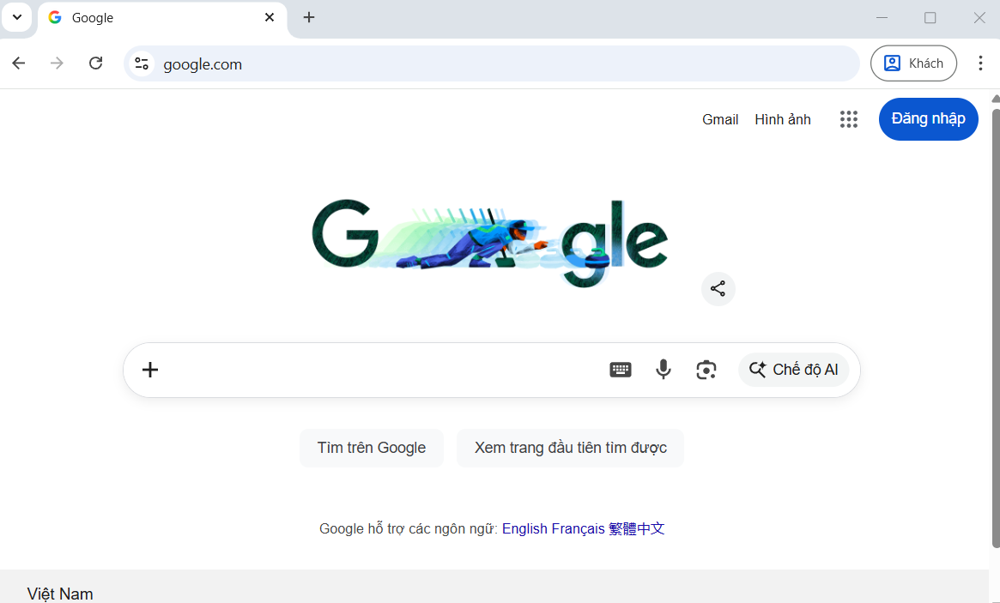

Trang chủ
IC3
spark
GV. Nguyễn Đình Bạch Long
Hệ thống ôn luyện Level 3
KIẾN THỨC TỔNG HỢP - PHẦN 1.2
Phiếu bài tập IC3 Spark Level 3 (Chủ đề 21 - Chủ đề 42)
Chủ đề 21
Máy in của em ngừng in, em nên làm gì trước tiên để giải quyết vấn đề này?
Khởi động lại máy tính
Dọn sạch hàng chờ máy in
Thay đổi trình điều khiển máy in
Kiểm tra dây cáp hoặc kết nối của máy in
Chủ đề 22
Máy tính của em bị chậm. Em nên làm gì trước tiên?
Đóng các ứng dụng hoặc cửa sổ không sử dụng
Rút phích cắm máy tính
Cập nhật hệ điều hành
Nhấp chuột liên tục
Chủ đề 23
Em hãy cho biết, URL (Uniform Resource Locator) là gì?
Nhà phát hành của một trang web
Tên của một trang web
Địa chỉ của một trang web
Tác giả của một trang web
Chủ đề 24
Khi tìm một nhà hàng bán thức ăn nhanh trên mạng, hành động nào sẽ có thể giúp ẩn vị trí của em?
Bật duyệt web ở chế độ riêng tư
Tải phần mềm chặn quảng cáo
Xóa cookies của em
Xóa cache (bộ đệm ẩn) sau khi ngừng duyệt web
Chủ đề 25
Orson là tài xế xe buýt của một trường học. Anh ấy đang chở một đoàn học sinh đi thực tế tới một nơi chưa từng đến. Anh ấy có thể sử dụng loại công nghệ nào để giúp mình định hướng được vị trí cần đến?
Radio
GPS (Global Positioning System)
Máy phát MP3 (MP3 Player)
Quả địa cầu (Globe)
Chủ đề 26
Em hãy cho biết, địa chỉ URL nào có định dạng đúng?
https://.companypro.net/test
https://www.companypro.net/test
http://www.companypro/test
https://www.companypro/net/test
Chủ đề 27
Em nên nhập www.companypro.net vào vị trí nào trên trình duyệt web để có thể truy cập trực tiếp đến trang web? (Quan sát hình ảnh để chọn vị trí phù hợp)

Thanh địa chỉ (Address Bar) - Nơi hiện chữ "Tìm trên Google..." hoặc URL
Ô tìm kiếm Google ở giữa trang
Nút "Đăng nhập"
Nút "Gmail"
Chủ đề 28
Em định quyên góp cho một tổ chức gây quỹ và muốn đảm bảo rằng mình đang ở đúng trang web. Tùy chọn nào sau đây là phần đuôi đúng cho trang web chính thức của một tổ chức phi lợi nhuận?
.net
.edu
.org
.com
Chủ đề 29
Em hãy di chuyển từng loại lưu trữ dữ liệu từ danh sách ở bên phải sang trường hợp sử dụng phù hợp ở bên trái.
Trường hợp sử dụng
Loại lưu trữ
Em chỉ muốn lưu trữ dữ liệu trên máy tính xách tay của mình
-- Chọn --
Ổ cứng (Hard Drive)
Lưu trữ đám mây (Cloud Storage)
USB
Em muốn dữ liệu của mình được sao lưu và lưu trữ một cách an toàn bởi một công ty khác
-- Chọn --
Ổ cứng (Hard Drive)
Lưu trữ đám mây (Cloud Storage)
USB
Em muốn sao chép hình ảnh giữa hai máy tính mà không cần kết nối mạng
-- Chọn --
Ổ cứng (Hard Drive)
Lưu trữ đám mây (Cloud Storage)
USB
Chủ đề 30
Em cần mô tả các bước xảy ra khi dùng trình duyệt web của mình để truy cập www.companypro.net. Hoàn thành các câu dưới đây bằng cách chọn đúng tùy chọn từ danh sách thả xuống.
1. Kết nối được thiết lập đến
...
Máy chủ web (Web Server)
Trình duyệt web
Trang (Webpage)
.
2.
...
Trang (Webpage)
Máy chủ web
Trình duyệt web
được gửi đến máy tính của người dùng.
3.
...
Trình duyệt web (Web Browser)
Máy chủ web
Trang
hiển thị trang web.
Chủ đề 31
Em hãy cho biết, Catfishing là gì?
Một cách an toàn để kết bạn trực tuyến
Một môn thể thao liên quan đến câu cá
Một loại nghiên cứu được thực hiện trực tuyến
Giả vờ là người khác trên mạng để đánh lừa hoặc lừa đảo người khác
Chủ đề 32
Em hãy cho biết, một ví dụ về quyền công dân kỹ thuật số tích cực là gì?
Sử dụng nền tảng trực tuyến để chia sẻ kiến thức và giúp đỡ người khác
Không báo cáo nội dung không phù hợp được tìm thấy trực tuyến
Tạo tài khoản giả để lừa gạt người khác
Chia sẻ thông tin cá nhân với người lạ trực tuyến
Chủ đề 33
Em hãy cho biết, một ví dụ về quyền công dân kỹ thuật số tiêu cực là gì?
Khen ngợi tác phẩm nghệ thuật của một người bạn trực tuyến
Tham gia vào các dự án hợp tác trực tuyến
Khuyến khích bạn bè tôn trọng và tử tế trên mạng
Tải xuống tài liệu có bản quyền mà không được phép
Chủ đề 34
Em hãy di chuyển mỗi loại tin tặc (Hacker) từ danh sách ở bên phải sang ví dụ tương ứng ở bên trái.
Ví dụ hành động
Loại tin tặc
Kiểm tra hệ thống mạng của một công ty để xem có dễ để tìm mật khẩu hay không, rồi cho công ty đó biết cách khắc phục
-- Chọn --
Tin tặc kiêm nhà hoạt động (Hacktivist)
Tin tặc có đạo đức (Ethical Hacker)
Tin tặc vô đạo đức (Unethical Hacker)
Tấn công một công ty để lôi kéo sự chú ý về một vấn đề nào đó, ví dụ như trả lương không công bằng cho nhân viên
-- Chọn --
Tin tặc kiêm nhà hoạt động (Hacktivist)
Tin tặc có đạo đức (Ethical Hacker)
Tin tặc vô đạo đức (Unethical Hacker)
Tấn công một hệ thống mạng để chặn không cho người dùng truy cập các tập tin của họ
-- Chọn --
Tin tặc kiêm nhà hoạt động (Hacktivist)
Tin tặc có đạo đức (Ethical Hacker)
Tin tặc vô đạo đức (Unethical Hacker)
Chủ đề 35
Em hãy cho biết, Hacker mũ trắng là gì?
Ai đó nhắm vào những người xấu trực tuyến
Ai đó đội mũ trắng để che giấu danh tính
Một người sử dụng các kỹ năng và kiến thức máy tính cho mục đích tốt
Người mặc đồ trắng khi sử dụng máy tính
Chủ đề 36
Em hãy di chuyển từng thuật ngữ từ danh sách ở bên phải sang phát biểu tương ứng ở bên trái.
Phát biểu
Thuật ngữ
Không xác định được danh tính hoặc che giấu thông tin cá nhân trực tuyến
-- Chọn --
Hacker
Anonymity (Ẩn danh)
Ethical (Đạo đức)
Piracy (Vi phạm bản quyền)
Người sử dụng các kỹ năng và kiến thức máy tính để thử nghiệm, khám phá và giải quyết các vấn đề về công nghệ
-- Chọn --
Hacker
Anonymity (Ẩn danh)
Ethical (Đạo đức)
Piracy (Vi phạm bản quyền)
Sao chép, phân phối hoặc sử dụng nội dung kỹ thuật số mà không có sự cho phép của chủ sở hữu
-- Chọn --
Hacker
Anonymity (Ẩn danh)
Ethical (Đạo đức)
Piracy (Vi phạm bản quyền)
Hành động có trách nhiệm, tôn trọng và hợp pháp khi sử dụng các công cụ kỹ thuật số và trực tuyến
-- Chọn --
Hacker
Anonymity (Ẩn danh)
Ethical (Đạo đức)
Piracy (Vi phạm bản quyền)
Chủ đề 37
Em nên làm gì khi thấy nội dung trực tuyến không phù hợp với lứa tuổi của mình?
Báo cáo việc này cho người lớn đáng tin cậy hoặc người điều hành trang web
Bỏ qua và tiếp tục duyệt web
Để lại một bình luận rằng nội dung làm em khó chịu
Chia sẻ với bạn bè của em
Chủ đề 38
Em có thể bảo vệ quyền riêng tư của mình khi đăng bài trực tuyến bằng cách nào?
Xóa bài viết của bạn vài ngày một lần để đảm bảo sự riêng tư
Làm cho tất cả các bài viết của bạn có thể xem được công khai
Sử dụng mật khẩu phức tạp cho tài khoản của bạn
Điều chỉnh cài đặt quyền riêng tư để giới hạn người có thể xem bài đăng của bạn
Chủ đề 39
Em hãy cho biết, làm cách nào có thể kiểm soát ai có thể xem, thích và nhận xét về bài đăng trực tuyến của em?
Cập nhật mật khẩu tài khoản của em
Thay đổi cài đặt thông báo
Sửa đổi cài đặt kiểu phông chữ
Điều chỉnh cài đặt quyền riêng tư
Chủ đề 40
Em hãy cho biết, ví dụ về nội dung kỹ thuật số có thể bị giới hạn độ tuổi là gì?
Nội dung giáo dục được đăng trên trang web của trường
Phim hoạt hình trẻ em
Trò chơi điện tử bạo lực
Công thức nấu ăn và hướng dẫn nấu ăn
Chủ đề 41
Em hãy cho biết, tầm quan trọng của cài đặt quyền riêng tư là gì?
Để bảo vệ thông tin cá nhân và kiểm soát những người nhìn thấy thông tin đó
Để chia sẻ thông tin cá nhân với công chúng
Để tăng khả năng hiển thị của các bài viết hoặc tin nhắn trực tuyến
Để có được người theo dõi hoặc lượt thích
Chủ đề 42
Em hãy di chuyển từng thuật ngữ từ danh sách ở bên phải sang phát biểu tương ứng ở bên trái.
Phát biểu
Thuật ngữ
Người sử dụng các kỹ năng Hack một cách bất hợp pháp và có mục đích xấu
-- Chọn --
Hacking
White Hat Hacker (Tin tặc mũ trắng)
Black Hat Hacker (Tin tặc mũ đen)
Gray Hat Hacker (Tin tặc mũ xám)
Ai đó sử dụng các kỹ năng Hack để xác định các lỗ hổng bảo mật mà không có sự cho phép... (thường phải trả phí để chia sẻ)
-- Chọn --
Hacking
White Hat Hacker (Tin tặc mũ trắng)
Black Hat Hacker (Tin tặc mũ đen)
Gray Hat Hacker (Tin tặc mũ xám)
Hành động truy cập trái phép vào thông tin kỹ thuật số
-- Chọn --
Hacking
White Hat Hacker (Tin tặc mũ trắng)
Black Hat Hacker (Tin tặc mũ đen)
Gray Hat Hacker (Tin tặc mũ xám)
Người sử dụng các kỹ năng Hack hợp pháp để xác định các lỗ hổng bảo mật trong công nghệ
-- Chọn --
Hacking
White Hat Hacker (Tin tặc mũ trắng)
Black Hat Hacker (Tin tặc mũ đen)
Gray Hat Hacker (Tin tặc mũ xám)
NỘP BÀI VÀ XEM KẾT QUẢ